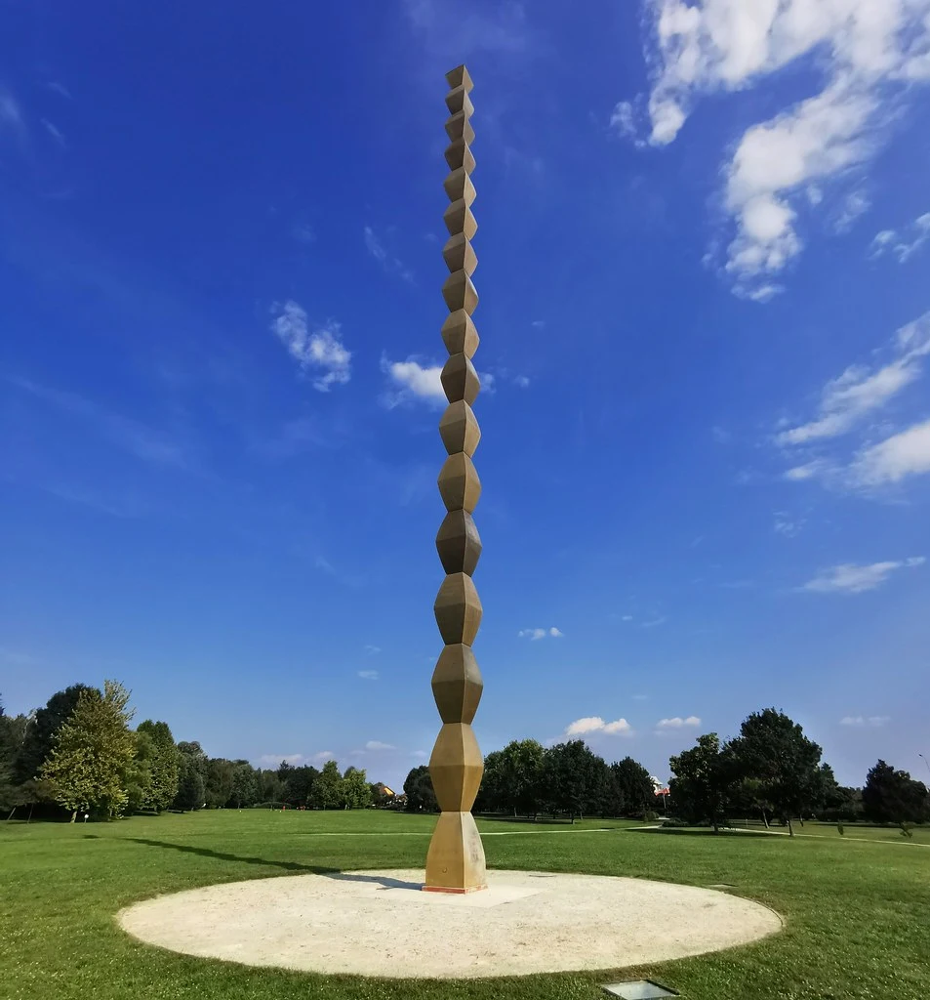
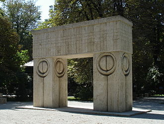

Operele lui Brâncuși

Constantin Brâncuși, născut la 19 februarie 1876, a fost unul dintre cei mai influenți sculptori ai secolului al XX-lea. Brâncuși a fost un pionier al artei moderne și a avut o contribuție semnificativă în dezvoltarea sculpturii abstracte. Acesta a fost cunoscut pentru abordarea sa inovatoare și stilul său distinctiv, care a reușit să simplifice formele și să capteze esența subiectului.
Coloana Infinitului

Poate cea mai cunoscută operă a lui Brâncuși, "Coloana Infinitului" sau "Coloana fără sfârșit", a fost inaugurată la 27 octombrie 1938. Astăzi se află în Târgul Jiu, și face parte din trilogia ansamblului Monumental din Târgu Jiu, alături de alte două sculpture faimoase ale artistului, Poarta sărutului și Masa tăcerii. Coloana are o înălțime de 29,35 metri și este compusă din 16 module octaedrice suprapuse. Denumirea originală era "Coloana recunoștinței fără sfârșit", fiind o reprezentare a coloanelor funerare specifice sudului României și a fost dedicată soldaților români din Primul Război Mondial căzuți în 1916 în luptele de pe malul Jiului.
Poarta Sărutului

Poarta sărutului este o sculptură în piatră, realizată de Constantin Brâncuși, parte a tripticului Ansamblului Monumental din Târgu Jiu. Lucrarea a fost amplasată pe locul ei în luna octombrie 1937 și a fost sculptată în prima parte a anului 1938, fiind finalizată la 20 septembrie și inaugurată la 27 octombrie 1938.
Masa Tăcerii

"Masa Tăcerii", una dintre cele mai cunoscute sculpturi ale maestrului Constantin Brâncuși, se află astăzi în parcul central din Târgu Jiu, pe malul râului Jiu. Aceasta a fost inaugurată în 1938 și este realizată din calcar, fiind înconjurată de 12 scaune ce poartă forma unei clepsidre.
De-a lungul timpului, Masa Tăcerii a mai fost numită Masa flămânzilor de Spirit, Masa omeniei, Masa Pomenirii, Masa apostolilor, Masa cinei nupțiale, Masa familiei, Masa Cinei celei de taină.
Ea reprezintă un omagiu adus soldaților căzuți în timpul Primului Război Mondial, cele 12 scaune reprezintă fiecare lună din an iar forma de clepsidră denotă trecerea timpului.